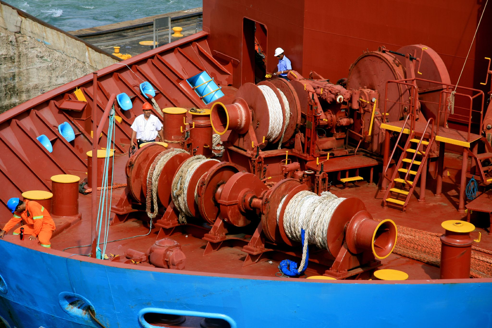

The forecastle is one of the foremost parts of the ship of length less than 7% of the total deck length.
It was initially used in military vessels, in which the soldiers used forecastles to take defensive positions.
But, today, forecastle serves many functions such as holding, anchoring and securing the major parts of the ship.
